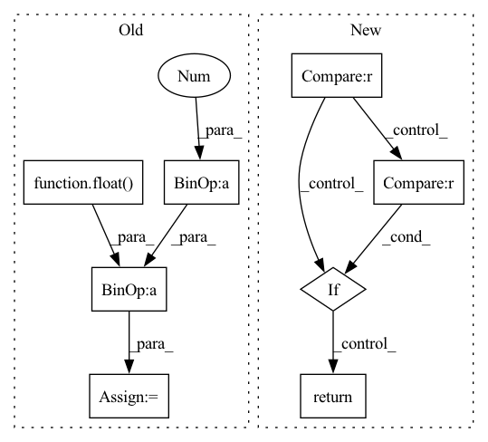

Pattern ID :39921

Before Change
@staticmethod
def get_sigma(X):
npoints = torch.tensor(float(len(X)))
nsqrt = npoints**(1./X.shape[1]) - 1.
delta = (X.max(0).values - X.min(0).values) / nsqrt
return delta.expand(X.size())
@staticmethod
After Change
if isinstance(self.sigma_method,float):
return self.get_sigma_ones(self.centers, s=self.sigma_method)
elif self.sigma_method == "1d":
return self.get_sigma_1d(self.centers)
elif self.sigma_method == "mean":
return self.get_sigma_average(self.centers)
else:
raise ValueError(self.sigma_method, " not a correct option for sigma")
In pattern: SUPERPATTERN
Frequency: 3
Non-data size: 8
Instances
Fragment ID: 113461857
Project Name: nlesc-jcer/qmctorch
Commit Name: 157db4eaa87f1f692ae29b423ac3cb8bcb8873f9
Time: 2019-06-17
Author: nicolas.gm.renaud@gmail.com
File Name: pyCHAMP/wavefunction/rbf.py
M Class Name: RBF
N Class Name: RBF
M Method Name: get_sigma(1)
N Method Name: get_sigma(1)
M Parent Class: nn.Module
N Parent Class: nn.Module
M File Name: pyCHAMP/wavefunction/rbf.py
N File Name: pyCHAMP/wavefunction/rbf.py
M Start Line: 93
M End Line: 96
N Start Line: 101
N End Line: 110
'>
Before Change
int_count += 1
upper_lower_ratio = float(upper_count) / float(lower_count)
int_alpha_ratio = float(int_count) / (float(upper_count + lower_count - 1))
if upper_lower_ratio >= 1.0 or int_alpha_ratio >= 1.0:
return True
else:
After Change
elif char.isnumeric():
numeric_count += 1
if upper_count > lower_count:
return True
elif numeric_count > (upper_count + lower_count):
return True
else:
return False
'>
Fragment ID: 113461856
Project Name: astrazeneca/kazu
Commit Name: d54b372f8e06d638f68c4da18c64601b1e17225e
Time: 2022-11-30
Author: elliot.ford@astrazeneca.com
File Name: kazu/utils/string_normalizer.py
M Class Name: StringNormalizer
N Class Name: StringNormalizer
M Method Name: is_probably_symbol_like(1)
N Method Name: is_probably_symbol_like(1)
M Parent Class:
N Parent Class:
M File Name: kazu/utils/string_normalizer.py
N File Name: kazu/utils/string_normalizer.py
M Start Line: 75
M End Line: 93
N Start Line: 74
N End Line: 92
'>
Before Change
int_count += 1
upper_lower_ratio = float(upper_count) / float(lower_count)
int_alpha_ratio = float(int_count) / (float(upper_count + lower_count - 1))
if upper_lower_ratio > 1.0 or int_alpha_ratio > 1.0:
return False
else:
After Change
elif char.isnumeric():
numeric_count += 1
if upper_count > lower_count:
return False
elif numeric_count > (upper_count + lower_count):
return False
else:
return True
'>
Fragment ID: 113461853
Project Name: astrazeneca/kazu
Commit Name: d54b372f8e06d638f68c4da18c64601b1e17225e
Time: 2022-11-30
Author: elliot.ford@astrazeneca.com
File Name: kazu/modelling/language/symbol_classification.py
M Class Name: GeneSymbolClassifier
N Class Name: GeneSymbolClassifier
M Method Name: word_like_filter(1)
N Method Name: word_like_filter(1)
M Parent Class: SymbolClassifier
N Parent Class: SymbolClassifier
M File Name: kazu/modelling/language/symbol_classification.py
N File Name: kazu/modelling/language/symbol_classification.py
M Start Line: 34
M End Line: 52
N Start Line: 34
N End Line: 52